Collaborators and Interns
A heartfelt thank you to all the brilliant researchers, colleagues, and students who contribute to our projects in bioacoustics, aquatic ecology, and behavioral biology.
Collaborators Geographical Locations
Current Collaborators
Present🇫🇷 France
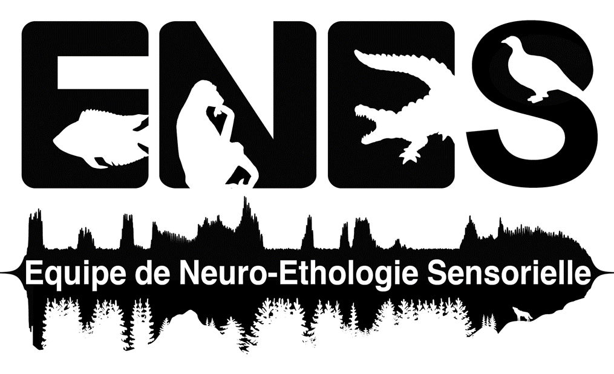
Université Jean Monnet Saint-Étienne (ENES Lab)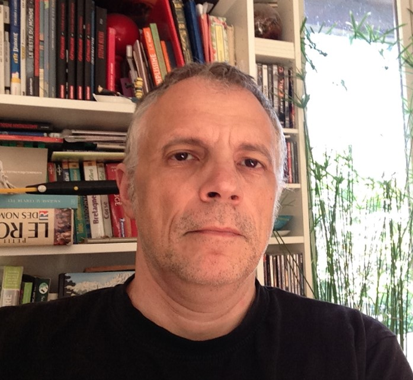
Dr. Joël Attia
Maître de Conférences (MCF)
ENES Lab / UJM
Specializes in animal behavior and bioacoustics, exploring acoustic communication networks in vertebrates.
View Profile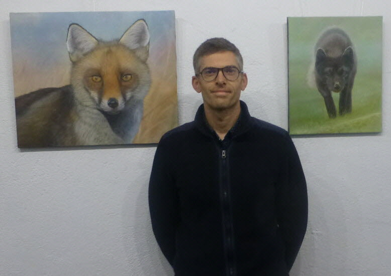
Dr. Vincent Médoc
Maître de Conférences (MCF)
ENES Lab / UJM
Focuses on behavioral ecology, host-parasite interactions, and aquatic ecosystems dynamics.
Personal Website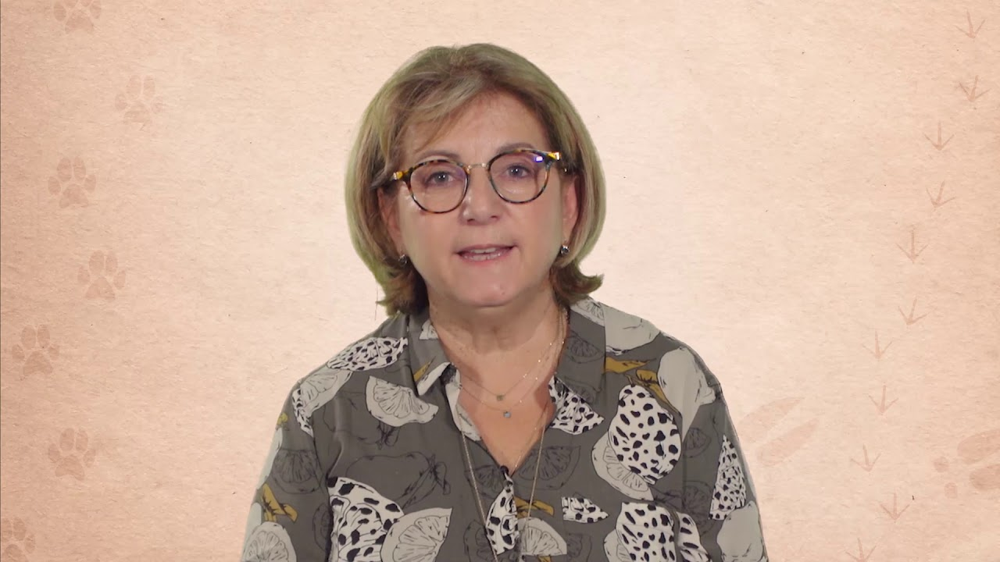
Dr. Marilyn Beauchaud
Maître de Conférences (MCF)
ENES Lab / UJM
Expert in ecophysiology and behavioral responses of aquatic organisms to environmental stressors.
ResearchGate Profile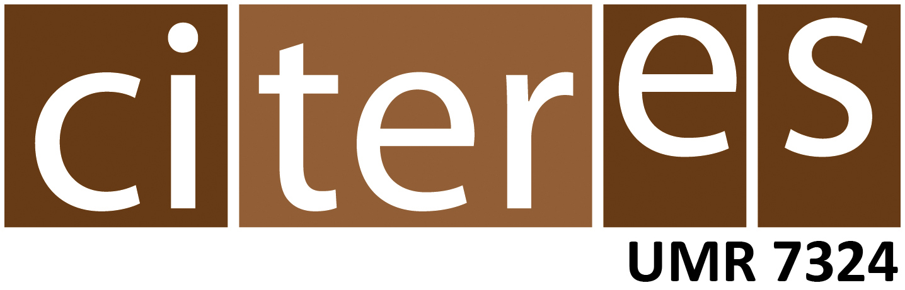
Université de Tours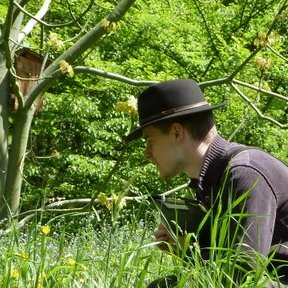
Dr. Loïc Prosnier
Maître de Conférences (MCF)
Université de Tours
Works on theoretical ecology, ecological modeling, and climate change impacts on biodiversity.
Website & Profile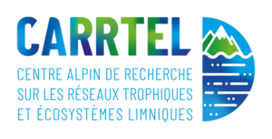
USMB & INRAE UMR CARRTEL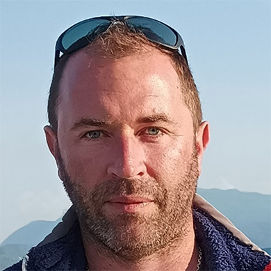
Dr. Victor Frossard
Maître de Conférences / Lecturer
USMB / INRAE CARRTEL
Investigates aquatic food webs, freshwater biodiversity, and limnological ecosystem functions.
INRAE Profile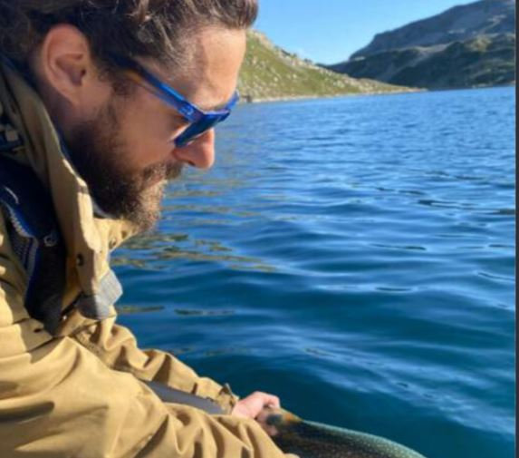
Dr. Allan Raffard
Researcher in Ecology
INRAE CARRTEL (Thonon-les-Bains)
Researches eco-evolutionary dynamics, community ecology, and anthropogenic impacts on aquatic species.
Personal Website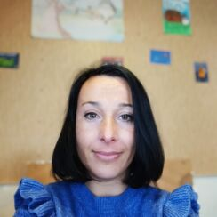
Dr. Émilie Réalis-Doyelle
Research Fellow in Aquatic Ecology
INRAE UMR CARRTEL
Studies fish ecology, behavioral adaptations, and physiological responses to environmental disturbances.
Google Scholar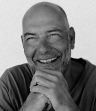
Dr. Jean Guillard
Senior Scientist in Hydroacoustics
INRAE UMR CARRTEL
Expert in hydroacoustic assessment methods for monitoring fish stock abundance and distribution.
INRAE Profile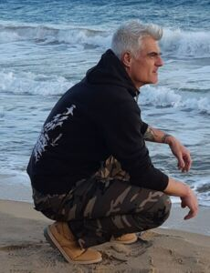
Dr. Stéphan Jacquet
Senior Researcher in Microbial Ecology
INRAE UMR CARRTEL
Focuses on aquatic microbial food webs, phytoplankton dynamics, and microbial ecology monitoring.
INRAE ProfileUniversité Claude Bernard Lyon 1 (LEHNA)
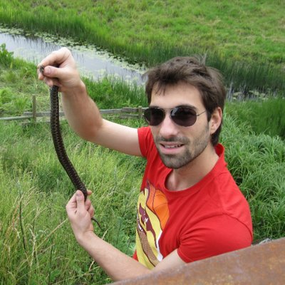
Dr. Emilien Luquet
Researcher / Lecturer
LEHNA, Univ. Claude Bernard Lyon 1
Specializes in evolutionary ecology and phenotypic plasticity in aquatic and terrestrial systems.
Lab Profile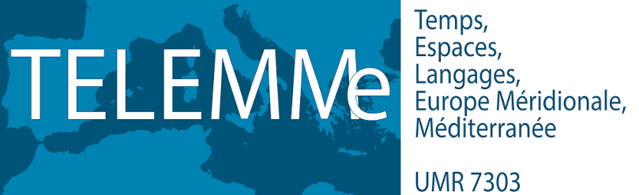
Aix-Marseille Université (UMR TELEMMe)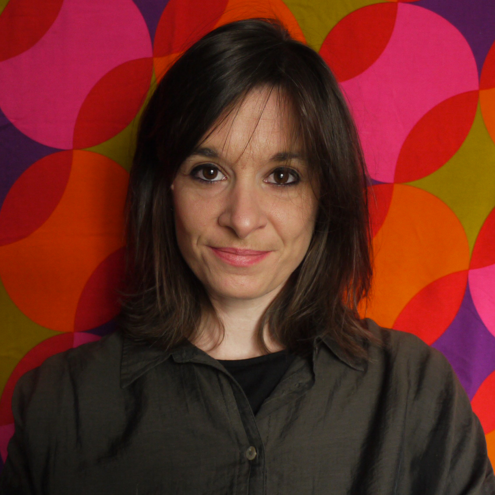
Dr. Anne-Sophie Tribot
Junior Professor (CPJ)
UMR TELEMMe, Aix-Marseille Univ
Explores biodiversity-ecosystem functioning relationships, particularly in marine artificial habitats.
ResearchGate Profile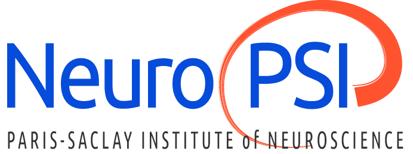
Université Paris-Saclay (Neuro-PSI)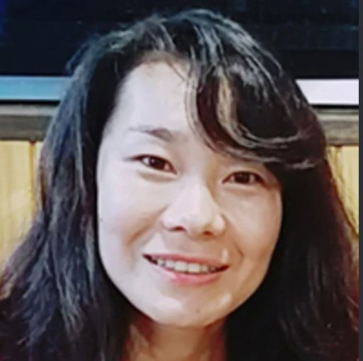
Dr. Kei Yamamoto
Researcher in Neurobiology & Behavior
Neuro-PSI, Université Paris-Saclay
Investigates the neural circuits governing social behavior and behavioral plasticity in vertebrates.
Lab Profile
 🇵🇹 Portugal (MARE / ARNET - Lisbon)
🇵🇹 Portugal (MARE / ARNET - Lisbon)
Dr. Manuel Vieira
Computational Bioacoustics & AI
MARE / ARNET, Lisbon
Applies machine learning and signal processing techniques to analyze aquatic bioacoustic soundscapes.
Lab Profile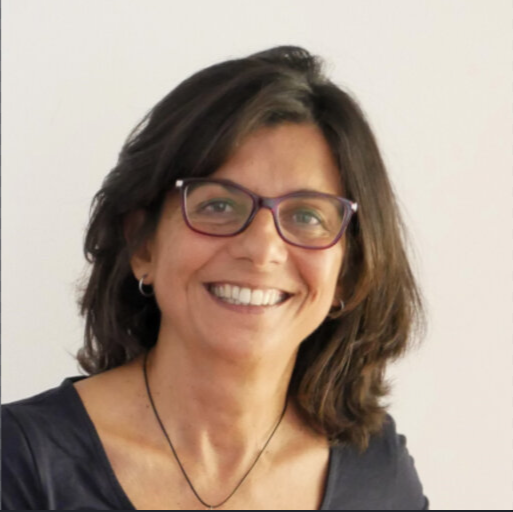
Dr. Clara Amorim
Ecophysiology & Bioacoustics
MARE / ARNET, Lisbon
Researches fish acoustic communication, sound production mechanisms, and environmental stressors.
Lab Profile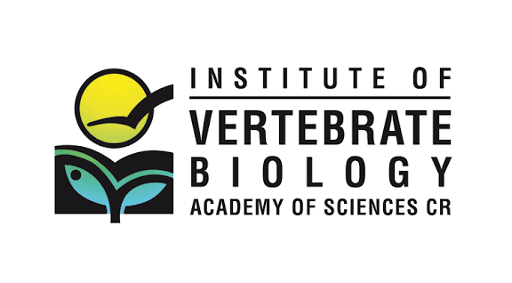
🇨🇿 Czech Republic (Brno)
Dr. Radim Blažek
Senior Researcher in Fish Ecology
Institute of Vertebrate Biology (IVB), CAS
Specializes in fish life history evolution, tropical fish ecology, and temporal population dynamics.
Google Scholar🇳🇴 Norway (NTNU - Trondheim)
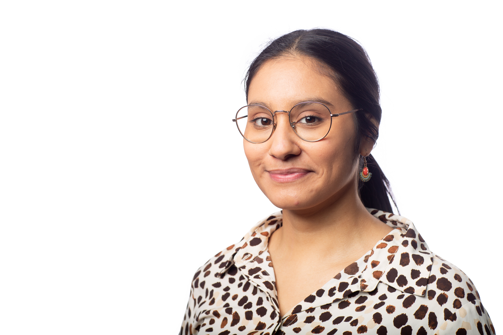
Dr. Émilie Rojas
Postdoctoral Researcher
NTNU Trondheim
Focuses on behavioral biology, acoustic communication, and cognitive ecology in animal groups.
Personal WebsitePast Collaborators
Past
Prof. Dennis M. Higgs
🇨🇦 CanadaProfessor in Bioacoustics
University of Windsor
Expert in aquatic sensory biology, fish hearing mechanisms, and anthropogenic noise effects.
ResearchGate Profile
Prof. Olivier Maire
🇫🇷 FranceProfessor in Marine Ecology
Université de Bordeaux (UMR EPOC)
Investigates benthic ecology, sediment bioturbation processes, and benthic organism interactions.
ResearchGate Profile
Prof. Eric Parmentier
🇧🇪 BelgiumProfessor in Fish Morphology & Acoustics
University of Liège
Pioneers research in functional morphology, sound production systems, and hearing in fishes.
ResearchGate Profile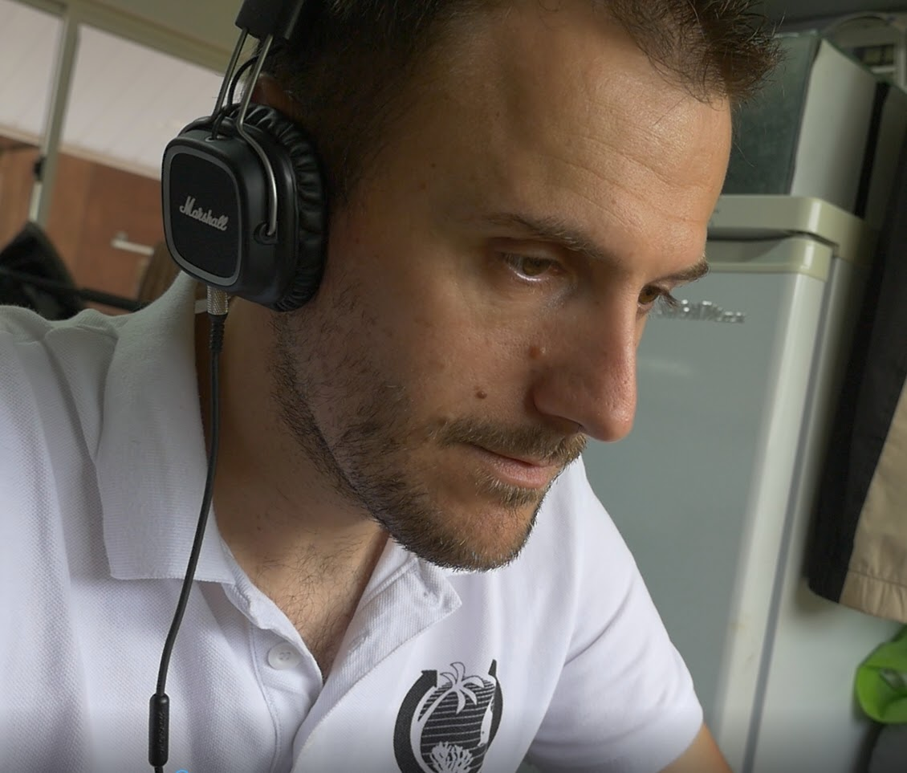
Dr. Frédéric Bertucci
🇫🇷 FranceResearcher in Marine Biodiversity
Université de Montpellier, MARBEC
Studies marine bioacoustics, coral reef fish ecology, and anthropogenic acoustic disturbance impacts.
Personal Website🎓 Interns & Students
Mentoring master and undergraduate students in behavioral assays, passive acoustic monitoring (PAM), data analysis in R, and field experiments.
Current Students & Interns:
- Khalil Bougalmi – Research Intern / Student Collaborator
Past Interns:
- Paola Casole – Former Research Intern
- Matilde Cas – Former Research Intern
Supervision Scope:
- Supervision of practical research works and field data acquisition.
- Training on bioacoustic analysis tools and behavioral metric quantification.